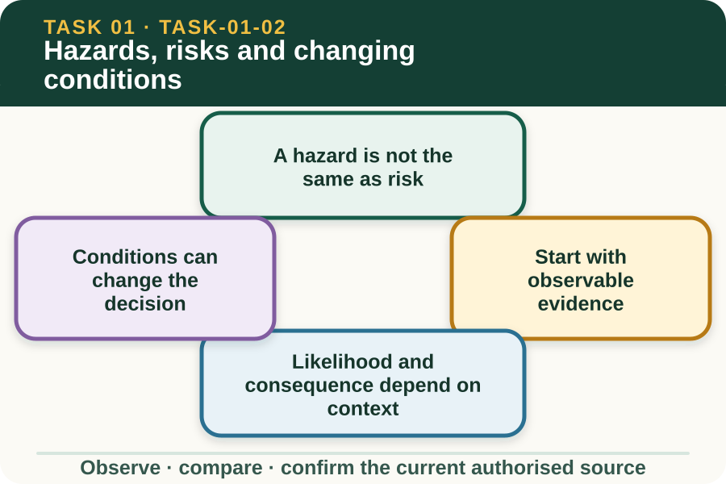

Classroom presentation · 8 slides
Hazards, risks and changing conditions
Task 1 · 1 of 8
Hazards, risks and changing conditions
Use evidence from a farm scene to separate a hazard, possible harm, likelihood and consequence.

Speaker notes
Teaching move (web-deck purpose): Use the module visual and the fictional worked example to move students from observation to a source-led decision. Ask students to name the evidence, the authority gap and the next safe communication step. Misconception and help: Separate the source of potential harm from the chance and seriousness of exposure. Hazard equals potential source; risk equals possible harm in context. Applied action: Write a four-part hazard story. Use a teacher-provided photograph or fictional scene. Record the hazard, exposure, possible harm and changed condition, then name the person or process that would confirm the next action. Boundary: This supplementary learning draws on mapped AHCWHS202 concepts. Current signed TAS and RTO documents control cohort delivery, assessment and competency decisions; current workplace procedures, supervision and authorised sources control real work. [Sources] - Source basis: AHCWHS202 Release 1 and SafeWork NSW First Steps to Farm Safety guidance on identifying hazards, assessing likelihood and severity, monitoring changing farm conditions and reporting. The local risk matrix controls real ratings. - Visual visual-task-01-02: Generated locally from accepted Stage 05 module headings; no external image copied. - Course visual manifest: work/pi/visuals/visual-manifest.json
Task 1 · 2 of 8
Map the learning
- A hazard is not the same as risk
- Start with observable evidence
- Likelihood and consequence depend on context
Retrieve: Which statement correctly separates a hazard from risk?
Speaker notes
Teaching move (learning map): Use the module visual and the fictional worked example to move students from observation to a source-led decision. Ask students to name the evidence, the authority gap and the next safe communication step. Misconception and help: Separate the source of potential harm from the chance and seriousness of exposure. Hazard equals potential source; risk equals possible harm in context. Applied action: Write a four-part hazard story. Use a teacher-provided photograph or fictional scene. Record the hazard, exposure, possible harm and changed condition, then name the person or process that would confirm the next action. Boundary: This supplementary learning draws on mapped AHCWHS202 concepts. Current signed TAS and RTO documents control cohort delivery, assessment and competency decisions; current workplace procedures, supervision and authorised sources control real work. [Sources] - Source basis: AHCWHS202 Release 1 and SafeWork NSW First Steps to Farm Safety guidance on identifying hazards, assessing likelihood and severity, monitoring changing farm conditions and reporting. The local risk matrix controls real ratings. - Visual visual-task-01-02: Generated locally from accepted Stage 05 module headings; no external image copied. - Course visual manifest: work/pi/visuals/visual-manifest.json
Task 1 · 3 of 8
Notice the evidence
A hazard is not the same as risk
A hazard is a source or situation with the potential to cause harm. On a farm it might involve plant, animals, chemicals, manual tasks, electricity, noise, dust, uneven ground, weather or the way work is organised.
Risk considers what harm could occur and how likely it is in the actual circumstances. The same hazard can create different risk when exposure, people, terrain, visibility, equipment condition or nearby work changes.
Start with observable evidence
Strong hazard recognition describes what can be seen, heard, measured or reliably reported. 'A loose gate latch beside a livestock route' is more useful than 'the yards are unsafe' because it identifies a condition and context.
Avoid jumping straight to blame or a preferred fix. First record the hazard, who or what could be exposed, the possible harm and the information still needed from the current workplace risk process.
Speaker notes
Teaching move (theory idea 1): Use the module visual and the fictional worked example to move students from observation to a source-led decision. Ask students to name the evidence, the authority gap and the next safe communication step. Misconception and help: Separate the source of potential harm from the chance and seriousness of exposure. Hazard equals potential source; risk equals possible harm in context. Applied action: Write a four-part hazard story. Use a teacher-provided photograph or fictional scene. Record the hazard, exposure, possible harm and changed condition, then name the person or process that would confirm the next action. Boundary: This supplementary learning draws on mapped AHCWHS202 concepts. Current signed TAS and RTO documents control cohort delivery, assessment and competency decisions; current workplace procedures, supervision and authorised sources control real work. [Sources] - Source basis: AHCWHS202 Release 1 and SafeWork NSW First Steps to Farm Safety guidance on identifying hazards, assessing likelihood and severity, monitoring changing farm conditions and reporting. The local risk matrix controls real ratings. - Visual visual-task-01-02: Generated locally from accepted Stage 05 module headings; no external image copied. - Course visual manifest: work/pi/visuals/visual-manifest.json
Task 1 · 4 of 8
Use the source boundary
Likelihood and consequence depend on context
Likelihood asks how exposure could occur under the real task and conditions. Consequence considers the possible seriousness of harm, not how inconvenient the delay may be.
The current workplace risk matrix controls any rating used on site. This lesson develops the reasoning behind a rating, but it does not supply or replace local categories, scores or acceptance thresholds.
Conditions can change the decision
Farm hazards change with weather, animal movement, deliveries, vehicle traffic, breakdowns and changes to the work location. A task that was appropriately planned can require review when new evidence appears.
Monitoring means checking whether assumptions and controls still match the scene. A learner should pause and report when the actual condition is outside the confirmed plan or their authority.
Speaker notes
Teaching move (theory idea 2): Use the module visual and the fictional worked example to move students from observation to a source-led decision. Ask students to name the evidence, the authority gap and the next safe communication step. Misconception and help: Separate the source of potential harm from the chance and seriousness of exposure. Hazard equals potential source; risk equals possible harm in context. Applied action: Write a four-part hazard story. Use a teacher-provided photograph or fictional scene. Record the hazard, exposure, possible harm and changed condition, then name the person or process that would confirm the next action. Boundary: This supplementary learning draws on mapped AHCWHS202 concepts. Current signed TAS and RTO documents control cohort delivery, assessment and competency decisions; current workplace procedures, supervision and authorised sources control real work. [Sources] - Source basis: AHCWHS202 Release 1 and SafeWork NSW First Steps to Farm Safety guidance on identifying hazards, assessing likelihood and severity, monitoring changing farm conditions and reporting. The local risk matrix controls real ratings. - Visual visual-task-01-02: Generated locally from accepted Stage 05 module headings; no external image copied. - Course visual manifest: work/pi/visuals/visual-manifest.json
Task 1 · 5 of 8
Connect evidence to action
Prioritise evidence, not familiarity
Familiar work can become normalised, which makes a hazard easier to overlook. Repetition is not evidence that a condition is safe; it only shows that the work has occurred before.
A consistent scan considers people, plant, animals, environment and task interaction. It also includes less visible factors such as fatigue, isolation, communication barriers and workload pressure where they affect safe work.
Report the risk story clearly
A concise report links four ideas: the observed hazard, possible exposure, possible harm and changed condition. This gives the designated person a usable starting point for the workplace's assessment and control process.
Keep uncertainty visible. If the learner cannot confirm equipment serviceability, terrain stability or another fact, state that it is unknown and needs checking rather than guessing that the risk is low.
Speaker notes
Teaching move (theory idea 3): Use the module visual and the fictional worked example to move students from observation to a source-led decision. Ask students to name the evidence, the authority gap and the next safe communication step. Misconception and help: Separate the source of potential harm from the chance and seriousness of exposure. Hazard equals potential source; risk equals possible harm in context. Applied action: Write a four-part hazard story. Use a teacher-provided photograph or fictional scene. Record the hazard, exposure, possible harm and changed condition, then name the person or process that would confirm the next action. Boundary: This supplementary learning draws on mapped AHCWHS202 concepts. Current signed TAS and RTO documents control cohort delivery, assessment and competency decisions; current workplace procedures, supervision and authorised sources control real work. [Sources] - Source basis: AHCWHS202 Release 1 and SafeWork NSW First Steps to Farm Safety guidance on identifying hazards, assessing likelihood and severity, monitoring changing farm conditions and reporting. The local risk matrix controls real ratings. - Visual visual-task-01-02: Generated locally from accepted Stage 05 module headings; no external image copied. - Course visual manifest: work/pi/visuals/visual-manifest.json
Task 1 · 6 of 8
Retrieve and check
Which statement correctly separates a hazard from risk?
- A moving vehicle is a hazard; the chance and seriousness of a collision depend on the people, route and conditions.
- A hazard and a risk are two names for the same completed injury.
- Risk means how much time a control will add to the job.
Teacher reveal
Correct. The source of harm is distinguished from the context-dependent risk.
Hazard equals potential source; risk equals possible harm in context.
Speaker notes
Teaching move (retrieval): Use the module visual and the fictional worked example to move students from observation to a source-led decision. Ask students to name the evidence, the authority gap and the next safe communication step. Misconception and help: Separate the source of potential harm from the chance and seriousness of exposure. Hazard equals potential source; risk equals possible harm in context. Applied action: Write a four-part hazard story. Use a teacher-provided photograph or fictional scene. Record the hazard, exposure, possible harm and changed condition, then name the person or process that would confirm the next action. Boundary: This supplementary learning draws on mapped AHCWHS202 concepts. Current signed TAS and RTO documents control cohort delivery, assessment and competency decisions; current workplace procedures, supervision and authorised sources control real work. [Sources] - Source basis: AHCWHS202 Release 1 and SafeWork NSW First Steps to Farm Safety guidance on identifying hazards, assessing likelihood and severity, monitoring changing farm conditions and reporting. The local risk matrix controls real ratings. - Visual visual-task-01-02: Generated locally from accepted Stage 05 module headings; no external image copied. - Course visual manifest: work/pi/visuals/visual-manifest.json Use option-specific feedback after the learner commits to an answer.
Task 1 · 7 of 8
Construct a source-led response
From a fictional farm scene, explain one hazard, the possible exposure and harm, and one changed condition that would require review.
- The observable hazard is…
- A person or asset could be exposed when…
- The possible harm is…
- The risk context changes if…
- The learner should report… and seek confirmation from…
Success criteria
- Separates hazard, exposure and possible harm
- Uses observable facts
- Explains why context changes risk
- Leaves local ratings and decisions to the authorised process
Speaker notes
Teaching move (guided written response): Use the module visual and the fictional worked example to move students from observation to a source-led decision. Ask students to name the evidence, the authority gap and the next safe communication step. Misconception and help: Separate the source of potential harm from the chance and seriousness of exposure. Hazard equals potential source; risk equals possible harm in context. Applied action: Write a four-part hazard story. Use a teacher-provided photograph or fictional scene. Record the hazard, exposure, possible harm and changed condition, then name the person or process that would confirm the next action. Boundary: This supplementary learning draws on mapped AHCWHS202 concepts. Current signed TAS and RTO documents control cohort delivery, assessment and competency decisions; current workplace procedures, supervision and authorised sources control real work. [Sources] - Source basis: AHCWHS202 Release 1 and SafeWork NSW First Steps to Farm Safety guidance on identifying hazards, assessing likelihood and severity, monitoring changing farm conditions and reporting. The local risk matrix controls real ratings. - Visual visual-task-01-02: Generated locally from accepted Stage 05 module headings; no external image copied. - Course visual manifest: work/pi/visuals/visual-manifest.json
Task 1 · 8 of 8
Close the loop
Write a four-part hazard story
Use a teacher-provided photograph or fictional scene. Record the hazard, exposure, possible harm and changed condition, then name the person or process that would confirm the next action.
- Name the strongest evidence in the scenario.
- Explain the decision or referral it supports.
- State which current source or authorised person controls real work.
Boundary: This supplementary learning draws on mapped AHCWHS202 concepts. Current signed TAS and RTO documents control cohort delivery, assessment and competency decisions; current workplace procedures, supervision and authorised sources control real work.
Speaker notes
Teaching move (exit and application): Use the module visual and the fictional worked example to move students from observation to a source-led decision. Ask students to name the evidence, the authority gap and the next safe communication step. Misconception and help: Separate the source of potential harm from the chance and seriousness of exposure. Hazard equals potential source; risk equals possible harm in context. Applied action: Write a four-part hazard story. Use a teacher-provided photograph or fictional scene. Record the hazard, exposure, possible harm and changed condition, then name the person or process that would confirm the next action. Boundary: This supplementary learning draws on mapped AHCWHS202 concepts. Current signed TAS and RTO documents control cohort delivery, assessment and competency decisions; current workplace procedures, supervision and authorised sources control real work. [Sources] - Source basis: AHCWHS202 Release 1 and SafeWork NSW First Steps to Farm Safety guidance on identifying hazards, assessing likelihood and severity, monitoring changing farm conditions and reporting. The local risk matrix controls real ratings. - Visual visual-task-01-02: Generated locally from accepted Stage 05 module headings; no external image copied. - Course visual manifest: work/pi/visuals/visual-manifest.json